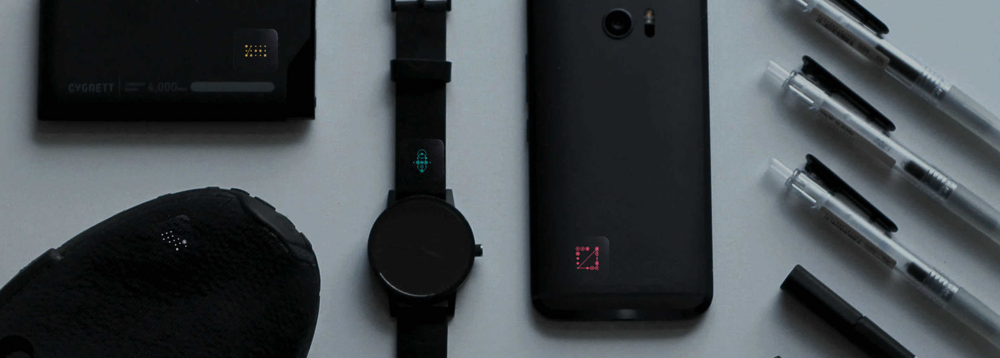
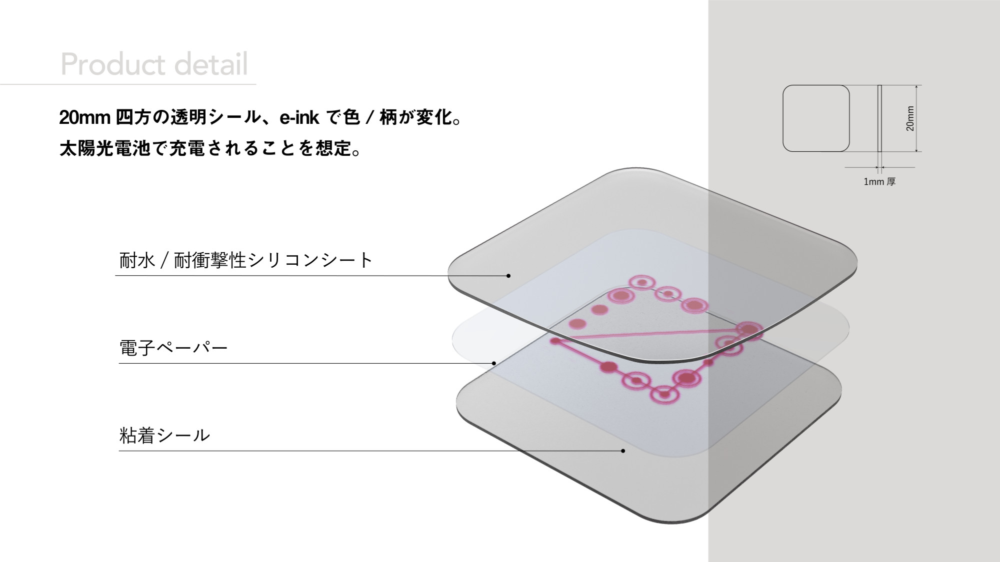
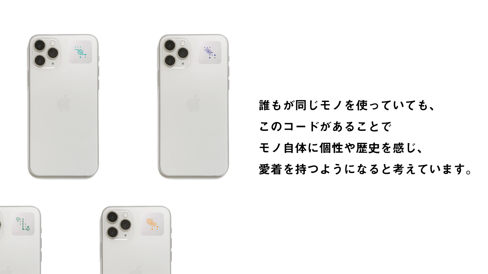
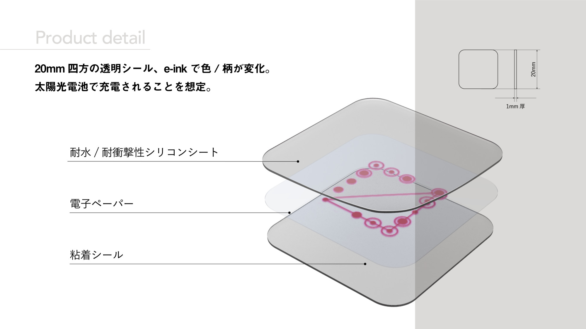
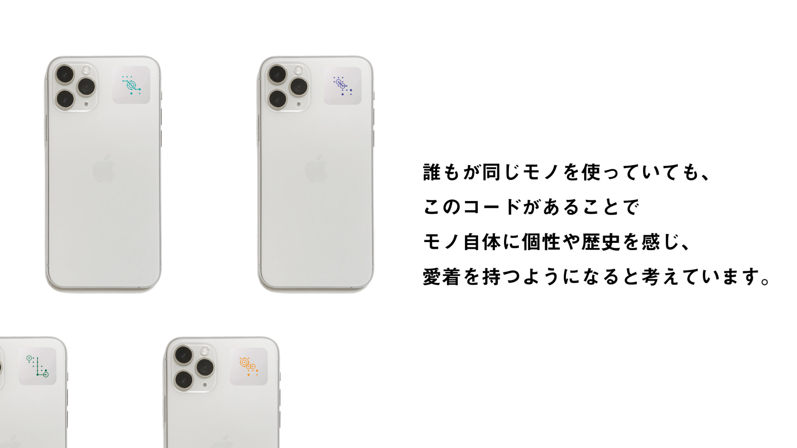

2020.05-06
OWNS オウンズ
大量生産/消費問題に対してプロダクトデザインができること
プロダクト(工業)デザインにとって「大量生産・大量消費」は大きな問題であり、大きなWeaknessでもある。 人々が物を捨て、新しく買い続ける裏には、そもそも修理の方法を知ることができなかったり、 修理の方が新しく買うより高額になるといったシステムにより、「修理の選択肢」を奪われていると考えた。 今回私は、所有物に貼り付けることで常にその所有物の修理方法を検索できる電子タグとシステムを提案した。
 


